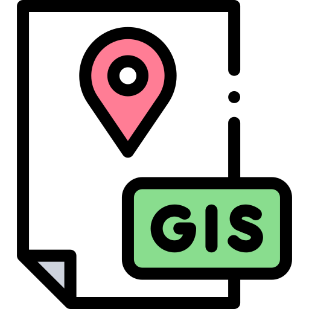
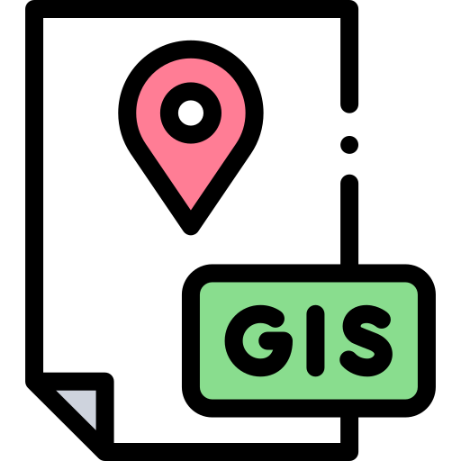

OWEN LANG
Software Engineer
About Me
Hello! My name is Owen Lang and I am a Full Stack Software Engineer. Until recently, I have been a full time organic farmer based in Tacoma, Washington. After completing degrees in Environmental Science and Environmental Studies at Loyola University Chicago in 2021, my path took me towards learning more about our agricultural system so that I can better know how to improve it. After two years of international travel and learning about sustainable ag both domestically and overseas, I determined that gaining skills as a software engineer was where I am best able to improve our defective agricultural system. Aside from coding and development, my hobbies lie in running, hiking, gardening, and generally just being outside and appreciating nature. When I'm not doing any of those, I'll probably be playing inside indie video games or messing with Rubik's cubes.


.png) 



Skills
Currently, I am fully versed in HTML, CSS, and Javascript. I also have a good amount of experience with GIS (Geographic Information Systems) through research projects during university. Working on many different kinds of farms has also improved my problem solving skills greatly, as there are constantly problems with no set solution. Aside from those, I have a good deal of experience working with large data sets to determine patterns while being able to visualize the data in the most recognizable way possible. Beyond the technical skills, my years of selling at farmers' markets and working with customers in order to ensure the best quality product has honed my people skills and enhanced my abilities to work within teams.
Sustainable Surplus
Community Supported Agriculture is a deep passion of mine. Growing up in farming country in Nebraska, I understand how important locally sourced food is to a community. Sustainable Surplus was designed as a way to offload excess produce created by local farms (specifically Community Supported Agriculture) so that as little goes to waste as possible, while providing more access to those who cannot afford a full CSA. A full stack application built using Python and Flask, Sustainable Surplus allows users to securely login to an account to post excess produce for other users to view and contact them for purchase.


Star Trekkers
Star Trekkers is a collective MERN stack project designed to allow prospective space travelers the means to map our their trip destination and peruse some of the possible costs. Utilizing a variety of technologies, including Plotly.js, Axios, Iron-Session, and others, we created an interactive, immersive site allows users to imagine some of the realities that come with commercial space travel.


.png)